|
|
THE FOLLOWING LOCATIONS HAVE BEEN FOUND
PAGE 0000
THE AVENGERS: A Surfeit of H2O (Sidney Hayers: )N29:
Kendal's Hall, Radlett Prep School, Watling Street, Radlett -
Steed (Patrick Macnee)
and Mrs. Peel (Diana Rigg)
arrive outside
the home of Jonah Barnard in a Mini Moke. Here Steed tells Mrs Peel
about the
mysterious weather conditions. Later Steed returns to Jonah’s house
expecting
to meet Mrs Peel. At the end of the adventure Steed bids farewell to
Jonah and
Mrs Peel drives off with Steed in the Moke.
Identified by Geoff Dodd, 25th April 2017
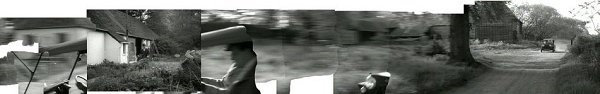


Mrs Peel is sent by Steed to visit Eli Barker at his home.

THE NEW
AVENGERS: The
Eagle's Nest (Desmond Davis: April 1976)
Kyleakin, Isle of Skye: John Steed and Purdey go
to the highlands
and tallk to a local fisherman. They watch as Monks from St. Dorca arrive to collect supplies.


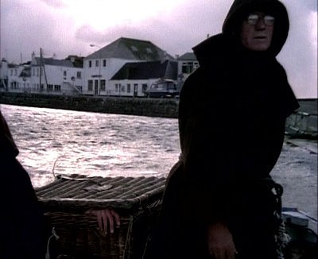
Milton, Applecross: As they talk to a local fisherman they watch as George Stannard’s body arrives in a small boat. John Steed (Patrick Macnee) arrives at St. Dorca in a motor boat looking for accommodation. Purdey (Joanna Lumley)arrives on the island under water and leaves her wet suit on the shore.

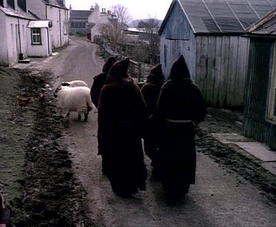
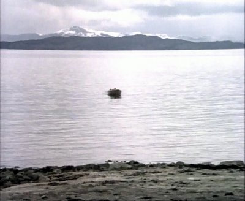
Camustiel, Applecross, Strathcarron: George Stannard (Brian Anthony) is pursued across St. Dorca by Karl (Frank Gutliff) and Hara (Sydney Bromley) using fishing rods as weapons, he is able to get to a motorboat, but Karl is able to catch him on the cheek with a poison hook as he leaves the harbour.

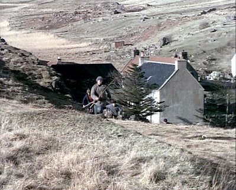
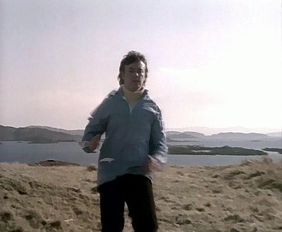
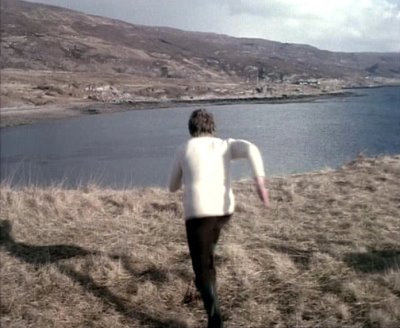
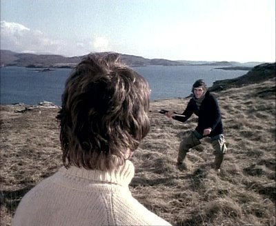
STRANGE REPORT: 7931 Sniper: 'When is your cousin not?' (Daniel Petrie: September/October 1968)
Offices of Buckinghamshire County Council, Walton Street, Aylesbury – Marisha
(Lelia
Goldoni) drops Strange (Anthony Quayle) and Hamlyn Gynt (Kaz Garas) at the morgue to see the body of
Pavel Gordy.
Later Hamlyn is taken by Marisha
to visit The University of Lublin. Here he talks to the students including Savi (Martin Shaw)
and Olenka (Kika Markham). Later
still Marisha
pays a visit to the apartment of Kulik and discovers that the investigation is not going
the way it was intended. She flees in an attempt to warn Strange.
Identified by Alan Field, April, 2015
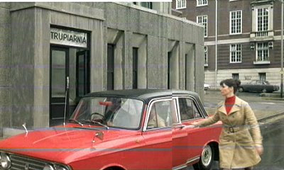 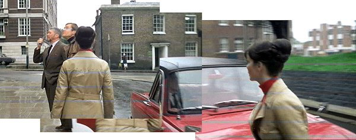
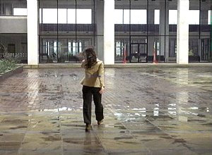
THE SAINT: The Gadget Lovers (Jim O’Connelly: February 1967)
Avenue
George V/Rue Vernet
looking towards Avenue de Champs Elysees: Posing as Colonel Smolenko, Simon checks into a
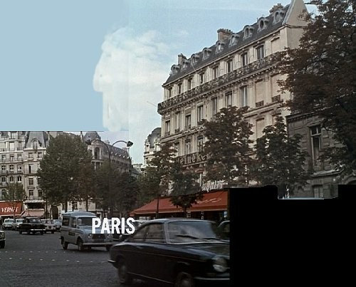
Caux Palace Hotel, Caux, Montreux, Vaud, Switzerland: After searching the town and the surrounding
area for the gadget factory, Simon suggests to Colonel Smolenko that they try the local
monastery.
Identified by Antony Glauser, March 2020
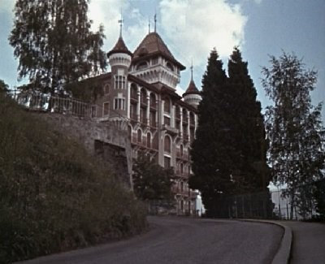
THE PROTECTORS: Ceremony for the Dead (Jeremy Summers: Summer 1971)
Gzira yacht marina: The
ambulance delivers the kidnapped president to a boat in the harbour
and drives away. Harry (Robert Vaughn), Carolline (Nyree Dawn Porter) and Paul (Tony Anholt)
arrive too late to do anything.
(Jean Pierre Borg, August 2007)
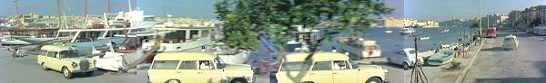
THE PROTECTORS: A Matter of Life and Death (Don Chaffey: Summer 1971)
The Malta Railway Museum Station: Harry (Robert Vaughn) waits by the roadside in a beach buggy.
When Baruna passes in his car Harry follows.
(Jean Pierre Borg, August 2007)
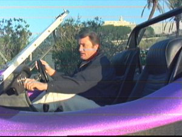
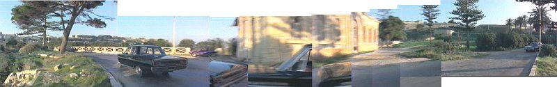
 Jean Pierre Borg –
“This view shows the impressive and wonderfully preserved front of The Malta
Railway Museum Station which is now The Stazzjon
Restaurant.”
Jean Pierre Borg –
“This view shows the impressive and wonderfully preserved front of The Malta
Railway Museum Station which is now The Stazzjon
Restaurant.”
THE SAINT: Vendetta for the Saint (Jim O’Connolly: 1967)
The Grand Harbour: The Saint (Roger Moore) walks along the harbour front at Naples to the Ristorante
Lionardo where he met the murdered James Euston the
previous night.
(Jean Pierre Borg, August 2007)
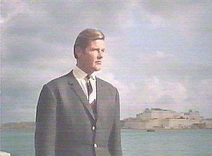
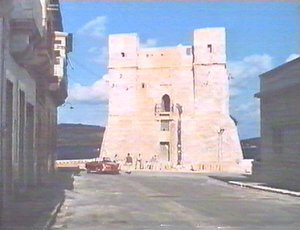 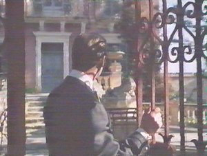
Road/bridge leading to Madliena Village (over Wied id-Dis): The
Saint (Roger Moore) scrambles down the cliffs, but his escape is cut off by
various gang members at the bridge.
(Jean Pierre Borg, August 2007)
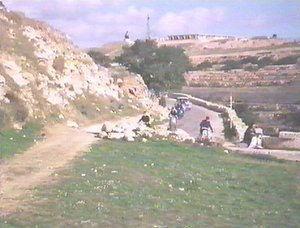 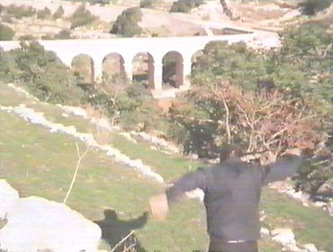
(Jean Pierre Borg, August 2007)
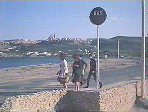
Mizieb: The gang members slowly catch up with the Saint (Roger
Moore) who is hiding in the back of a truck.
(Jean Pierre Borg, August 2007)
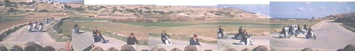
Priory Hospital, Roehampton, London, SW15 – Steed (Patrick Macnee) watches from the college as Gilpin is attacked by Gunner. Quaintance (Robert Fleming) and Steed rush out to help.
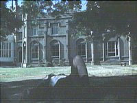 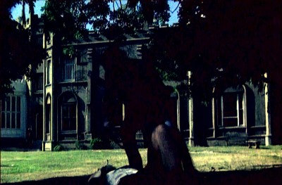 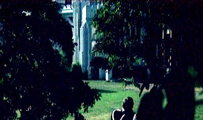
H33: St. Huberts, St. Huberts Lane, Gerrards Cross – Purdey races off looking
for Larry and his big missile.
(Identified by Geoff Dodd, March 2021)
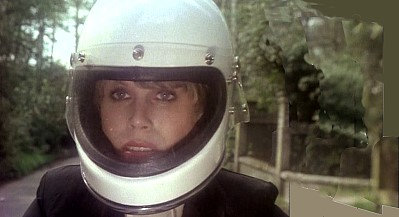
F55: Beaconsfield Cricket Club, London Road junction with Minerva Way, Beaconsfield - John Steed
(Patrick Macnee), Gambit (Gareth Hunt) and
Purdey (Joanna Lumley) relax off duty playing a few cricket strokes.
Between them they christen the ‘purdka’ and
Steed notices a strangely familiar figure in the distance.
(Geoff Dodd, April 19th 2013)

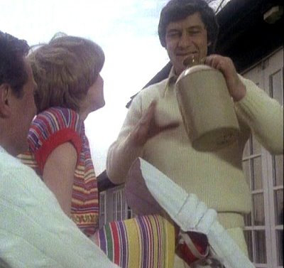
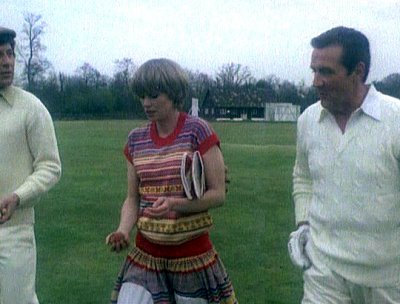
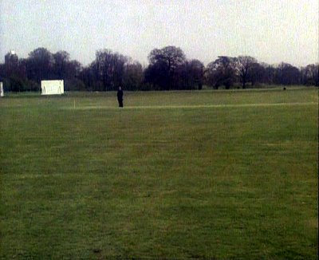
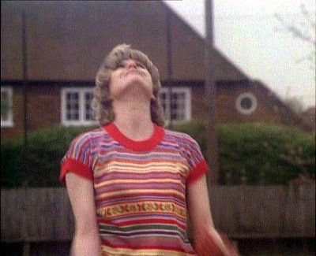
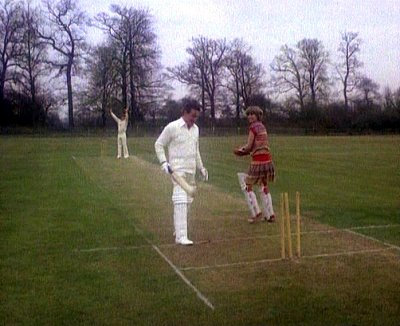
THE SAINT: The
Fiction Makers (Roy Baker: May 1966)
Leicester Square, WC2 -Simon
Templer is attending the premierr of 'Sunburst Five' based on the novel by Amos
Klein (Odeon Cinema, actually the premier of THE
BLUE MAX, 1st July 1966).
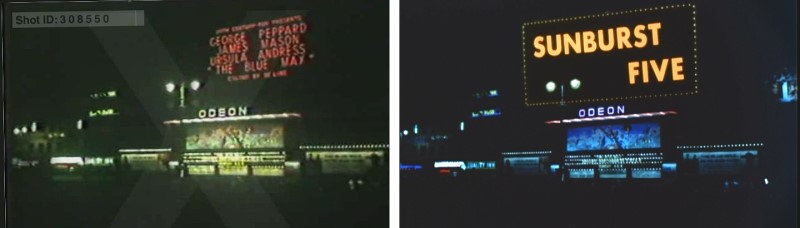
Haymarket, SW1 - After the premier of 'Sunburst Five', Simon Templer drives Finlay Hugoson (Peter Ashmore) through London to Finlay's appartment (camera tracks car from London Pavillon Theatre to Piccadilly Odeon .
Also Regent Street, SW1 - After the premier of 'Sunburst Five', Simon Templer drives Finlay Hugoson (Peter Ashmore) through London to Finlay's appartment (pov from inside car passing Criterion Theatre into Piccadilly Circus).
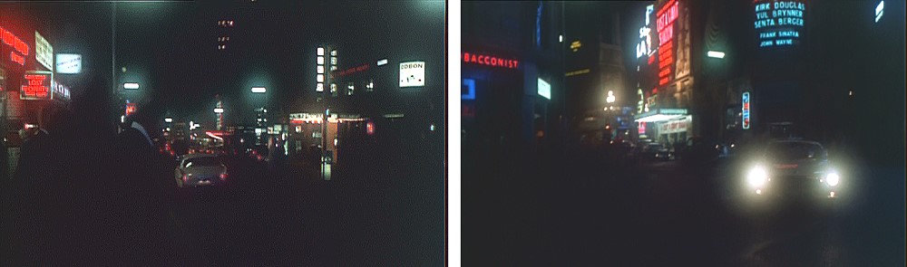
Charring Cross Road, WC2 –After the premier of 'Sunburst Five', Simon Templer drives Finlay Hugoson (Peter Ashmore) through London to Finlay's appartment in his Volvo (back projection).

P14: The Kiln, Old Redding, Stanmore - Simon Templer (Roger Moore) arrives
in his Volvo at the home of Amos Klein.
Identified by Geoff Dodd.


Also seen in GIDEON’S WAY: The Big Fix.


THE SAINT: The Fast Women (Leslie Norman: September 1966)
The Bells of Ouzeley pub in Old Windsor, Berkshire - Karl Tordoff books
into a hotel near Brands Hatch. After he is tracked down by The Saint, Tordoff
escapes in his car closely followed by Templar in the Volvo.
Identified by Mark Barry, July 2020


THE SAINT: The Persistent Patriots (Roy Baker: October 1966)
Inverforth House on North End Way, NW11
- Protesters gather outside the embassy where Prime Minster Jack Liskard is
staying in
(Identified by Geoff Dodd, March 2014)

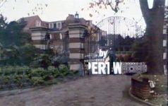
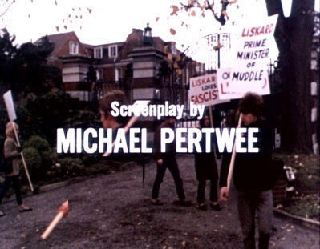
Hamilton Terrace NW8 turning into Marlborough
Place - Lockhart and Benson drive through
(Identified by Geoff Dodd, March 2014)
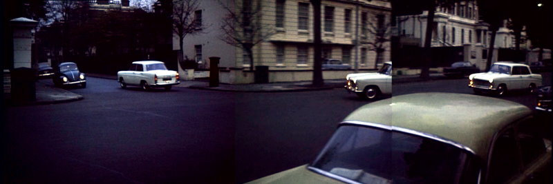
THE AVENGERS: Take Me to Your Leader (Robert Fuest: November 1968)
98 Hamilton Terrace, London NW8 -
Steed follows the case's instructions and finds himself outside a
ballet school located in a house at 11 Heston Avenue.
(Identified by Neil Rigby,
November 2018)
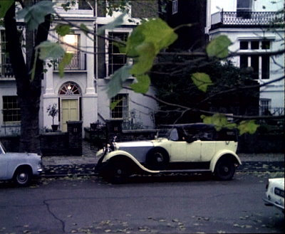
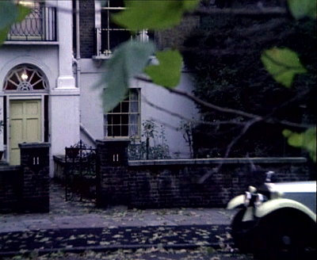
THE AVENGERS: The Fear Merchants
(Gordon Flemyng:
September 1966)
H76: Ridgeway Trading Estate, The
Ridgeway, Thorney Lane, Iver - Steed (Patrick Macnee)
escorts Crawley (Andrew Keir)
to his Rolls Royce and watches him drive off. He then notices Crawley’s
chaffer
on the ground unconscious. Steed jumps into his Bentley and gives chase.
(Identified by Mike Serby,
May 2015)
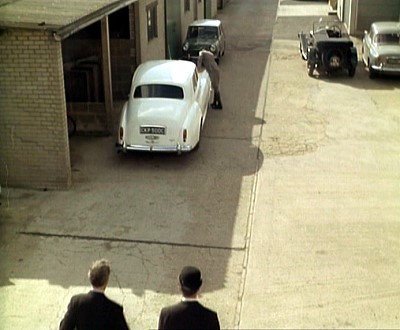
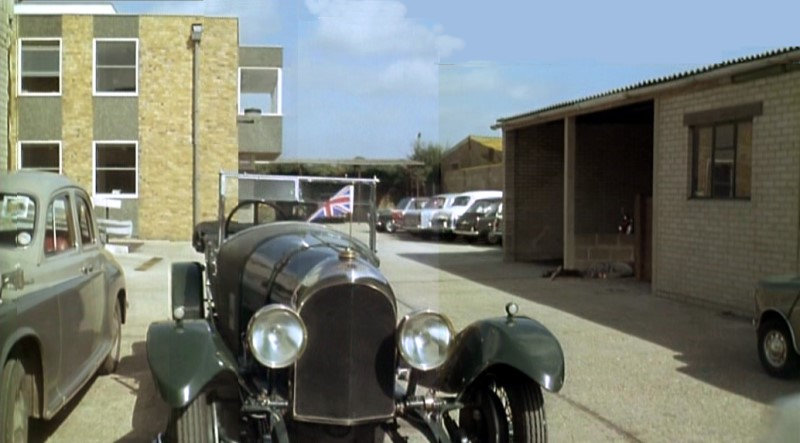
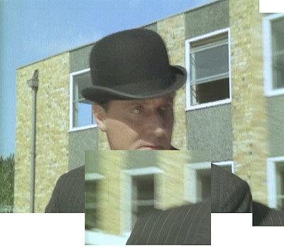
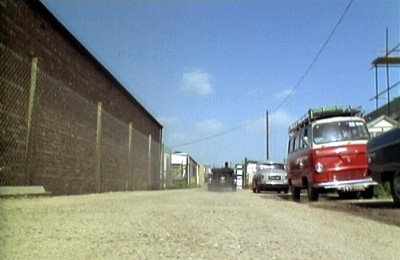
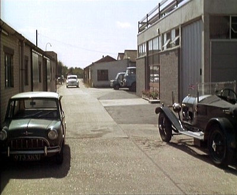
JOURNEY TO THE UNKNOWN:
The Beckoning Fair One
(Don Chaffey: 1968)
Wilton Square, Awyne Place, Alwyne
Road N1
– Crichton (Clive Francis) arrives at Alison’s house after getting
leave
unexpectedly. There is an air raid on and the residents are preparing
for the
worst. Decades later Mr. Barrett (Larry Noble) helps Jon Holden move
into the
house that he has rented.
(Identified April 2013 by Tavistock
of the Britmovie forum)

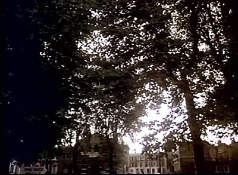
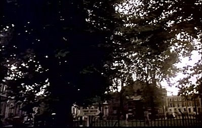
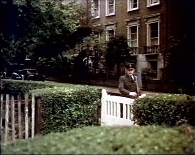
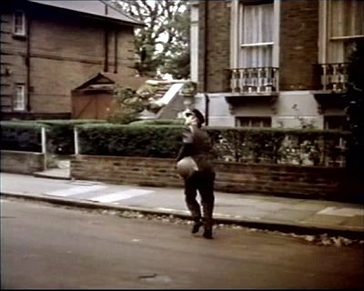
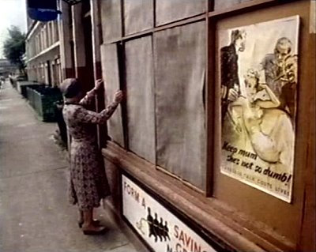

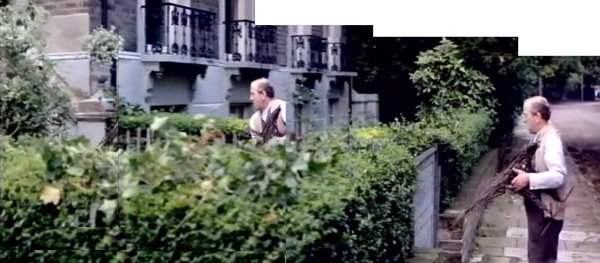
JOURNEY TO THE UNKNOWN:
The New People (Peter
Sasdy: 1968)
M26: The Tudor House on the
junctions of The
Avenue and Park Avenue, Radlett – Hank Prentiss (Robert
Reed) and
Anne Prentiss (Jennifer Hilary) move into their new home, not
suspecting that
Matt Dystal(Milo
O'Shea) has plans for them.
(Identified by Geoff Dodd,
March 2014)

JOURNEY TO THE UNKNOWN: Poor Butterfly (Alan Gibson: Alan Gibson: October 1968)
A406 North Circular, NW4 – Commercial artist, Steven Miller (ChadEverett) has received an invitation to attend a weekend party in the country and sets off out of London his1929 Bugatti.
(Idenified by Alan Field, April 2013)

Hill Street, junction of Chesterfield Hill, London, W1 – Sue Tarleton walks away from the restaurant after a meal with Greg Richards to look for a taxi. Unfortunately she did not take Carrie Clark’s warning seriously and gets crushed by a falling building.
(Identified by Sandgrounder on the Britmovie Forum, December 2018)
Film: One More Time (1969)
JOURNEY TO THE UNKNOWN: Eve (Robert Stevens: 1968)
Leicester Square Underground Station – After liberating Eve from the department store Albert Baker (Dennis Waterman) carries her through London. He enters a tube station and buys tickets for them both.
(Identified by Nick Cooper, 6th Feruary, 2012)
THE SAINT: The Set-Up (Roy Baker: October 1964)
Clarendon Court, Staverton Road, Wilesden Green, North West London, NW2 - Simon watches as Corrigan arrives home. He enters the building, but Orping arrives in his car soon after.
(Identified by Geoff Dodd, November 2019)

THE SAINT: The Damsel in Distress (Peter Yates: Aug/Sep 1964)
158 boulevard Haussmann 75008 Paris, France - Barbara Astral takes the opportunity to talk to the new driver, Sebastian, as they begin their journey back to Vila Di Milo.
(Identified by Pierre Alfonsi, December 2014)
THE BARON: Diplomatic Immunity (Leslie Norman: August 1965)
Craven Road W2 at the junction with Westbourne Terrace, looking towards Praed Street – After taking a sharp corner in his Jensen, Mannering decides that his car is being followed by a Jaguar.
(Identified by Geoff Dodd, 2nd April 2013)

DEPARTMENT S: The Man Who Got a New Face (Cyril Frankel 1968)
Cap Estel, Eze, France: Emilio Andre's mansion where he is preparing to pay the ransom.
(Identified by Paul Stroud, January 2014)
 DEPARTMENT S: Blackout
(Ray Austin: September 1968)
DEPARTMENT S: Blackout
(Ray Austin: September 1968)Cap Estel, Eze, France: Peacehaven, Doctor Lang’s villa in The Bahamas.
(Identified by Paul Stroud, January 2014)
DEPARTMENT S: The Treasure Of The Costa Del Sol (John Gilling: September 1968)
Hotel Riviera, Avda Antonio Machado, Benalmadena Costa, Malaga: Jason is sent to the Hispano Hotel, Torremolinos to lie low (swimming pool only).
(Identified by Peter Day, 19th August 2010)
DEPARTMENT S: Les Fleurs du Mal (Cyril Frankel: Early
1969)
Piazza Municipio, Naples, Italy:
Rome, Italy, September 26th. Stacey rushes to Jonny’s apartment in Rome
with news that ‘the brothers’ have arrived in town.
(Identified by Paul
Stroud, June 2015)

Cimetière
de Montmartre, Paris, Île-de-France, France: Weber and his
men go in search of Johnny’s secret with Stuart Sullivan in tow. They
find themselves close to Père Lachaise Cemetery (Cimetière de
Montmartre
Seen from Rue Caulaincourt).
(Identified by looking Pierre
Alfonsi, September 2013)
DEPARTMENT S: Dead Men Die Twice (Ray Austin: 1968)
Hôtel de Miramion, 47, quai de la Tournelle, Paris, France: After his death Stanley Reeves is taken to the Paris morgue. Whilst he is here Alain shoots him. Sir Curtis and Stewart Sullivan go to the morgue to investigate.
(Identified by Pierre Alfonsi, June, 2012)
Cap Estel, Eze, France: Alexander Lazaros’ villa, Greece. Which is being used as Lomax as a hiding hole.
(Identified by Paul Stroud, January 2014)
GIDEON’S WAY: Big Fish, Little Fish (Cyril Frankel: October 1964)
Furneux Pelham, Hertfordshire – Robert Carne (Ray Barrett) goes for a drink and an alibi at the local pub (The Star, The Causeway). He notices the police station and decides to use the local sergeant to confirm his story.
(Identified by Greg Mishevski, aka SainT on the Britmovie Forum, 2nd February 2011)
UFO: Reflections in the Water
Whitby, North Yorkshire: Straker watches scenes of this "Cornish fishing village" in the studio cinema.
(Identified by Neil Rigby, June 2016)
World Backgrounds footage 11025 from a production called “Summer Journey”.
RANDALL AND HOPKIRK [DECEASED]: Could You Recognise the Man Again? (Jeremy Summers: April 1969)
Regent's Park Road and Rothwell Street, NW1 - After leaving the police station Jeff drives his Vauxhall through London. He discusses the situation with Marty.
(Identified by Sam Denham, December 2018)
RANDALL AND HOPKIRK [DECEASED]: The Man from Nowhere (Robert Tronson: January 1969)
Albany Street, NW1
- Jeff drives his Vauxhall round to Jean's flat after being summoned to
deal with the man claiming to be Marty. Later Jeff escorts the imposter
to his car and drives off.
(Identified by Alex Bulgo, January 2019)
RANDALL AND HOPKIRK [DECEASED]: Money to Burn (Ray Austin: January 1969)
Edbury Mews, SW1
- Elizabeth Saxon sets off in her Triumph with Kevin O'Malley and Marty
aboard to chase after Anne-Marie Benson and Angela Kendon who have
stolen O'Malley's car from the Club 70.
(Identified by Michelle Clarke, November 2014)
RANDALL AND HOPKIRK [DECEASED]: The Smile Behind the Veil (Jeremy Summers: Autumn 1968)
O6: Rowley Lane, Borehamwood - After escaping Donald flags down a lift only to find Cynthia driving.
(Identified by Vince Cox, November 2012)

RANDALL AND HOPKIRK [DECEASED]: Vendetta for a Dead Man
Hawthorne Lane, Burnham Beeches, Berkshire
- After Sam Grimes leaves the Cavello-Smiths' house (in Hadley Wood)
Jeff and Marty follow him down this road before chasing him around
Burnham Beeches.
(Identified by Alan Hayes, November 2017)
Hyde Lane crossing in How Wood, where How Wood Station is today – Irish Republicans derail a train and shoot a policeman before making their escape.
Identified by Alan Field.
Auch Viaduct on the West Highland Line – Drake, posing as Michael Liamond, takes a train to Glen Doon.
Identified by Alan Field.
Think you know a spot? Need a bigger image? Email me.
< Previous | Index | Avengerland | Next >
Copyright © 2003 Anthony R. McKay